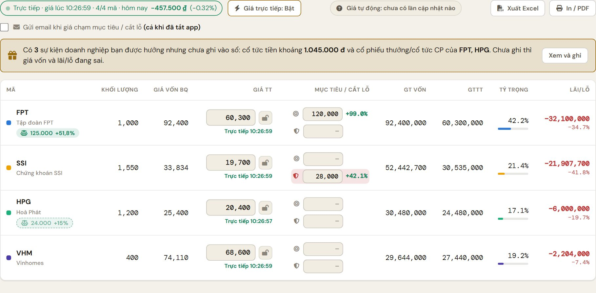
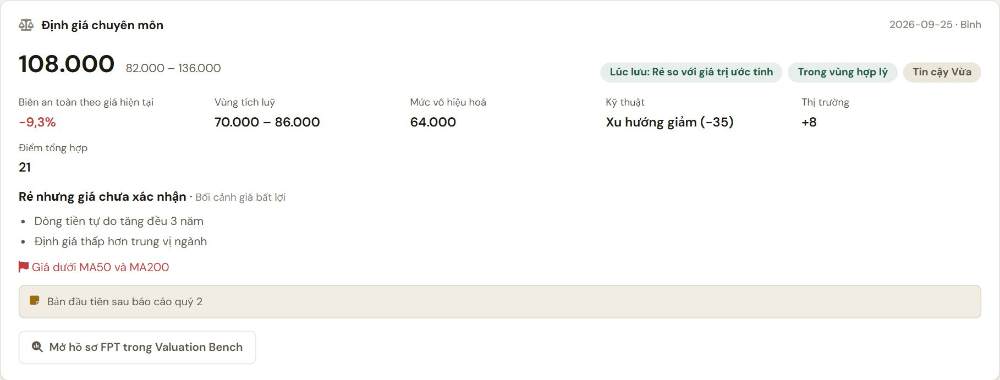
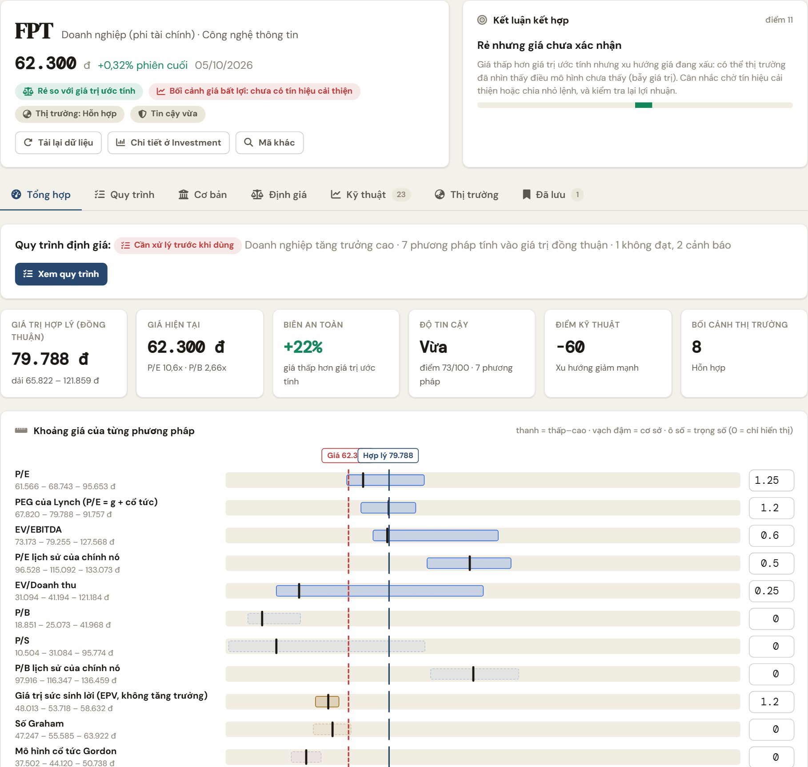
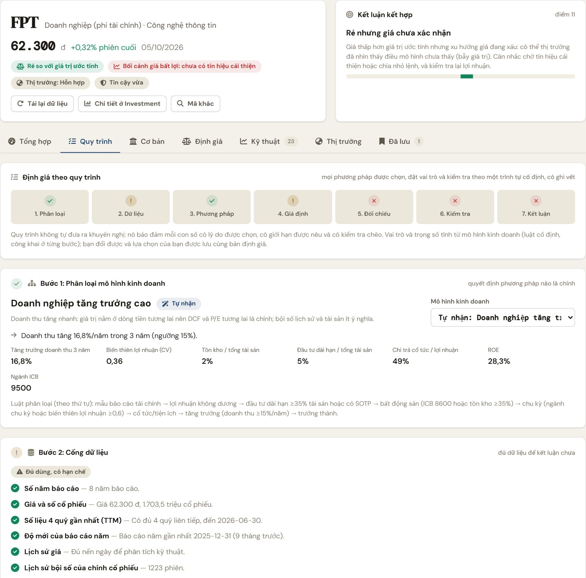
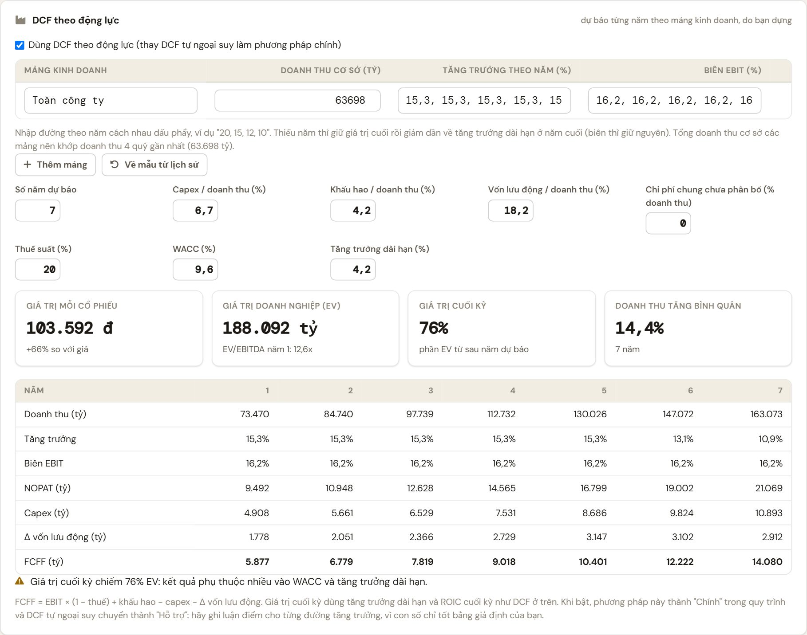
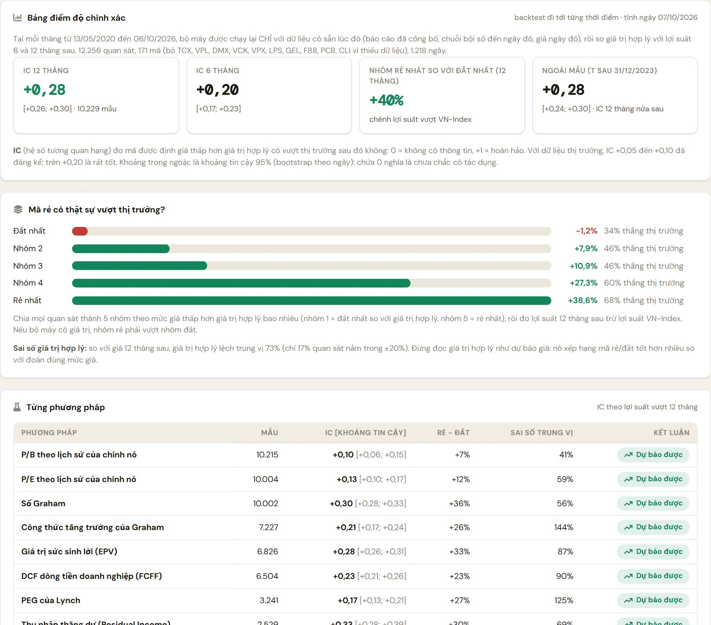

Investment Workbench và Valuation Bench
phiên bản 0.1.12
WorkHub Fin là công cụ phân tích nội bộ dùng dữ liệu miễn phí của thị trường Việt Nam. Mọi con số, nhận định và vùng giá đều là ước tính phụ thuộc vào giả định và số liệu đầu vào; không phải khuyến nghị đầu tư. Số liệu miễn phí có thể trễ hoặc khác báo cáo gốc: luôn đối chiếu trước khi ra quyết định.
WorkHub Fin là ứng dụng máy tính (Windows) giúp một nhóm đầu tư cổ phiếu Việt Nam quản lý danh mục và định giá chuyên môn trên cùng một bộ dữ liệu. Ứng dụng gồm hai khu độc lập, liên kết với nhau:
Khu quản lý: danh mục, sổ lệnh, theo dõi, hiệu suất, rủi ro, giới hạn đầu tư, duyệt lệnh, báo cáo; cả nhóm xem tổng hợp.
Khu định giá chuyên môn: hồ sơ từng cổ phiếu với phân tích cơ bản, hơn 50 phương pháp định giá, phân tích kỹ thuật, bối cảnh thị trường, quy trình 7 bước và bảng điểm độ chính xác.
Hai khu dùng chung dữ liệu: kết quả định giá lưu ở Valuation Bench hiện ngay trong Investment Workbench (thẻ "Định giá chuyên môn" ở Chi tiết mã và huy hiệu dưới mỗi mã trong Danh Mục).
WorkHub-Fin_0.1.12_x64-setup.exe (do quản trị nhóm gửi hoặc tải từ trang phát hành của dự án). Nếu Windows hiện cảnh báo SmartScreen, chọn Thông tin thêm → Vẫn chạy (ứng dụng nội bộ chưa có chứng chỉ thương mại).Thành viên nhóm tài chính dùng được toàn bộ phần nghiên cứu, định giá và danh mục cá nhân. Một số thao tác dành cho quản lý tài sản (ví dụ đặt giới hạn đầu tư của nhóm, ngưỡng duyệt lệnh, duyệt ý tưởng) hoặc quản trị viên. Nếu không thấy một nút, nhiều khả năng bạn chưa có vai trò đó: hỏi quản trị nhóm.
| Dữ liệu | Nguồn | Lưu ý |
|---|---|---|
| Báo cáo tài chính năm và quý, chỉ số, bội số lịch sử | VNDirect (miễn phí) | Có thể trễ vài ngày sau khi doanh nghiệp công bố; một số khoản mục khác báo cáo gốc. |
| Giá và nến ngày, VN-Index | VNDirect, đối chiếu thêm với VCI | Giá cổ phiếu trong lịch sử là giá đã điều chỉnh cổ tức và chia tách. |
| Ảnh chụp cả thị trường, thống kê ngành ICB | Tự tổng hợp hằng ngày từ VNDirect | Khoảng 1.500 mã; ngành lấy theo ICB cấp 2 (rộng). |
| Lợi suất trái phiếu chính phủ | TradingView (công khai) | Dùng làm lãi suất phi rủi ro theo ngày. |
Các nguồn miễn phí không có cam kết dịch vụ: có thể đổi định dạng hoặc chặn bất cứ lúc nào. Ứng dụng kiểm tra chất lượng dữ liệu hằng ngày và báo "nguồn lỗi" ở tab Dữ Liệu của Toàn Nhóm khi có vấn đề.
Mỗi ngày có dữ liệu mới, ứng dụng (bản desktop) tự lưu một tệp nén vào thư mục dữ liệu của app trên máy này, để sau này kiểm chứng các mẫu lọc bằng số liệu thật. Không ghi gì lên máy chủ. Xem số ngày đã lưu và thư mục ở Sao lưu & Phục hồi (quản trị viên); nếu đã chọn thư mục mạng thì có thêm một bản ở đó. Ngày nào không mở ứng dụng sẽ không có tệp ngày đó.
Lộ trình ngắn nhất để thấy ứng dụng làm được gì:
FPT) ở ô tìm kiếm, nhấn Enter. Đợi vài giây để tải báo cáo tài chính, nến giá và bội số.Trang Finance chính có thanh bên trái. Nhóm Tài Chính gồm: Pipeline, Investment Workbench, Valuation Bench, Format Reports và Kế Toán (OnyxLine). Hai khu có thanh điều hướng riêng ở đầu trang; ở cả hai đều có lối sang khu kia.
| Khu | Thanh điều hướng |
|---|---|
| Investment Workbench | Toàn Nhóm · Danh Mục · Nghiên Cứu · Valuation Bench |
| Valuation Bench | Tổng quan · Hồ sơ cổ phiếu · Bộ lọc · Thị trường · Bản đồ · Định Giá CP · Phương pháp · Độ chính xác · Investment |
Nút mặt trăng ở góc phải đổi giao diện sáng/tối; nút ngôi nhà về trang Finance.
Trong Valuation Bench, mỗi mã và mỗi tab có địa chỉ riêng, ví dụ #stock/FPT/process. Nút Quay lại của ứng dụng hoạt động đúng theo từng tab.
Khu quản lý đầu tư. Mỗi thành viên quản lý danh mục riêng; nhóm xem tổng hợp ở Toàn Nhóm.

Trang chứa các tab sau (thanh tab ở đầu trang):
| Tab | Dùng để |
|---|---|
| Danh Mục | Các vị thế đang nắm: khối lượng, giá vốn, giá thị trường (tự cập nhật trong giờ giao dịch, có thể khoá giá), tỷ trọng, lãi/lỗ, giá mục tiêu và cắt lỗ. Mới 0.1.10: dưới mỗi mã có huy hiệu giá trị hợp lý từ Valuation Bench và biên an toàn so với giá hiện tại; bản đã lưu quá 45 ngày hiện viền đứt. Bấm vào huy hiệu để mở hồ sơ mã. |
| Theo Dõi | Danh sách mã quan tâm kèm giá muốn mua, giá mục tiêu và cảnh báo giá (email và thông báo máy tính). |
| Sổ Lệnh | Ba nhóm: Giao Dịch CP (nhập tay hoặc nhập từ tệp sao kê Excel/CSV; thuế bán và phí tự tính), Dòng Tiền, Hành Động DN (cổ tức, thưởng, quyền mua, được nhắc theo sự kiện thật). Có kiểm tra trước lệnh: khối lượng theo ngân sách rủi ro, tỷ trọng sau lệnh, thanh khoản, giới hạn bị chạm. Nút Đối soát so sổ lệnh với sao kê số dư / sao kê lệnh của công ty chứng khoán, gợi ý nguyên nhân lệch và tạo lệnh điều chỉnh. |
| Nhật Ký | Nhật ký quyết định: ghi lý do và kỳ vọng lúc ra quyết định, đối chiếu với giá thực tế và VN-Index, đánh giá lại. |
| Hiệu Suất | Hiệu quả so với VN-Index (alpha, beta, Sharpe, sụt giảm tối đa), phân tích đóng góp theo mã và ngành, phân rã Brinson so với danh mục chuẩn của chiến lược. |
| Gương | Soi lại hành vi quyết định: hiệu chỉnh mức tự tin, thiên kiến chốt lời sớm / giữ lỗ lâu, mua đuổi, bán hoảng loạn; mọi nhận xét kèm cỡ mẫu để biết đáng tin đến đâu. |
| Rủi Ro | Rủi ro danh mục (VaR/ES, kiểm thử căng thẳng, tập trung ngành và mã, thanh khoản khi bán). |
| Lịch | Lịch cổ tức và sự kiện doanh nghiệp của các mã đang nắm. |
| Báo Cáo | Lãi/lỗ đã chốt theo năm, cân bằng danh mục về tỷ trọng mục tiêu, xuất số liệu báo cáo cuối tháng ra Excel (tệp để đưa cho AI điền mẫu PowerPoint). |
Trang nghiên cứu cổ phiếu. Các chế độ xem ở thanh trên cùng: Bảng so sánh (các mã bạn đã định giá, xếp Rẻ / Hợp lý / Đắt), Ý tưởng (đề xuất, bình luận, bỏ phiếu) và Chi tiết mã.
Trong Chi tiết mã, ngay dưới phần đầu trang có thẻ Định giá chuyên môn (mới 0.1.10): giá trị hợp lý, khoảng giá, biên an toàn tính theo giá hiện tại, vùng tích luỹ, mức vô hiệu hoá, điểm kỹ thuật, lý do và cờ cần soát, kèm nút mở hồ sơ đầy đủ ở Valuation Bench. Đánh giá "Lúc lưu" là kết luận tại thời điểm lưu; giá có thể đã đổi.

Các chế độ Bộ lọc, Thị trường và Bản đồ (sàng lọc cả thị trường, mặt bằng định giá, lịch sử P/E-P/B) nay nằm ở Valuation Bench; đường dẫn cũ vẫn hoạt động. Trang Định Giá CP (nhập số liệu và định giá theo mẫu thủ công) vẫn còn nguyên.
| Tab | Dùng để |
|---|---|
| Danh Mục Chung · Thành Viên | Danh mục hợp nhất của nhóm, mức trùng danh mục giữa các thành viên, từng thành viên. |
| Giới Hạn | Giới hạn đầu tư của nhóm và cá nhân (cảnh báo / ghi lý do / chặn); áp dụng cả khi nhập sao kê; chấm tuân thủ mỗi chiều ngày giao dịch. |
| Định Lượng · Dữ Liệu | Bảng định lượng (vòng quay ngành, biên 52 tuần, thanh khoản, khối ngoại); trạng thái chất lượng dữ liệu và cảnh báo nguồn. |
| Khớp Lệnh · Hành Trình | Chất lượng khớp lệnh (so với giá đóng cửa và VWAP ngày); hành trình quyết định. |
| Duyệt Lệnh | Lệnh vượt ngưỡng (đặt bởi quản lý, theo % NAV và/hoặc số tiền) cần đề xuất được người KHÁC duyệt trước khi ghi. Mặc định đang tắt, quản lý bật khi cần. |
| Chiến Lược · Hoạt Động · Báo Cáo | Danh mục chuẩn và tỷ trọng mục tiêu theo ngành; nhật ký hoạt động; báo cáo nhóm. |
Valuation Bench là khu để định giá chuyên môn một cổ phiếu: kết hợp phân tích cơ bản, nhiều phương pháp định giá, phân tích kỹ thuật và bối cảnh thị trường thành một kết luận có giải thích, được tạo theo một quy trình có ghi vết.
Trang đầu có ô tìm mã, các mã xem gần đây, bản tóm tắt mặt bằng định giá thị trường so với lịch sử, và danh sách các bản định giá đã lưu của cả nhóm (mã, giá trị hợp lý, người lập, ngày).
| Tab | Nội dung |
|---|---|
| Tổng hợp | Giá trị hợp lý đồng thuận và dải, giá hiện tại, biên an toàn, độ tin cậy, điểm kỹ thuật và thị trường; biểu đồ khoảng giá của từng phương pháp; vùng giá tham khảo; lý do chính; cờ cần soát. Có banner trạng thái quy trình. |
| Quy trình | Bảy bước ghi vết (xem mục 6). |
| Cơ bản | Tỷ số tài chính nhiều năm, DuPont, chất lượng báo cáo (Piotroski, Altman, Beneish, Sloan), vốn lưu động; riêng ngân hàng có chỉ số ngân hàng. |
| Định giá | DCF, DCF ngược, Monte Carlo, kịch bản; DCF theo động lực; điều chỉnh khoản bất thường; bộ mã so sánh; bội số; phương pháp tài sản, thu nhập, cổ tức (mục 7 và 8). |
| Kỹ thuật | Xu hướng, động lượng, dòng tiền, biến động, hỗ trợ/kháng cự, mẫu nến, phân kỳ, sức mạnh so với VN-Index; điểm kỹ thuật tổng hợp. |
| Thị trường | Mặt bằng định giá thị trường và ngành, vòng quay ngành, dòng tiền khối ngoại, thanh khoản; điểm bối cảnh thị trường. |
| Đã lưu | Các bản đã lưu của mã này (mới trước): so sánh theo thời gian, nạp lại giả định, xoá bản của mình. |

Thay vì chạy mọi phương pháp rồi lấy trọng số cố định, mỗi lần định giá đi qua một quy trình. Quy trình không đưa ra khuyến nghị: nó bảo đảm mỗi con số có lý do được chọn, có giới hạn được nêu và có kiểm tra chéo. Mở tab Quy trình; thanh tiến độ ở đầu cho thấy từng bước xanh (đạt), vàng (cảnh báo) hay đỏ (không đạt).

| # | Bước | Việc quy trình làm và việc bạn làm |
|---|---|---|
| 1 | Phân loại mô hình kinh doanh | Ứng dụng nhận ra mô hình bằng luật cố định (xem Phụ lục A): ngân hàng, chứng khoán, bảo hiểm, bất động sản, công ty mẹ, phục hồi/đang lỗ, chu kỳ, cổ tức, tăng trưởng cao hay trưởng thành. Mỗi kết luận kèm lý do và các chỉ số căn cứ. Bạn có thể chọn lại mô hình trong ô chọn; khi đó vai trò phương pháp tính lại. |
| 2 | Cổng dữ liệu | Kiểm tra: số năm báo cáo, giá và số cổ phiếu, 4 quý gần nhất (TTM), độ mới của báo cáo, lịch sử giá, lịch sử bội số, số mã cùng ngành. Thiếu giá hoặc dưới 3 năm báo cáo thì chặn ("Thiếu dữ liệu then chốt"); các hạn chế còn lại hạ độ tin cậy và được ghi vào hồ sơ. |
| 3 | Kế hoạch phương pháp | Mỗi phương pháp có một vai trò: Chính (trọng số 2,5) Hỗ trợ (1,2) Đối chiếu (0,5) Tham khảo hoặc Loại (0, chỉ hiển thị). Tình trạng "Hạn chế" (ví dụ ngành chỉ có 6 mã so sánh, giá trị cuối kỳ DCF quá lớn) giảm một nửa trọng số và nêu lý do. Cột Backtest cho biết phương pháp đó dự báo tốt đến đâu trong quá khứ. Bạn đổi vai trò từng phương pháp bằng ô chọn và ghi lý do. Phương pháp chính chưa tính được hiện thành lỗ hổng (ví dụ bất động sản thiếu NAV) kèm hướng bổ sung. |
| 4 | Giả định và nguồn gốc | Liệt kê từng giả định (WACC, tăng trưởng, biên, thuế, vốn đầu tư...) và nó được suy ra từ đâu; giả định bạn đã sửa được đánh dấu "Bạn sửa". |
| 5 | Chạy và đối chiếu chéo | Các phương pháp chính có đồng thuận không (chênh ≤25% đồng thuận, ≤50% lệch vừa, trên 50% bất đồng). Từ 4 phương pháp chính, phương pháp lệch xa nhất được tách riêng để không che sự đồng thuận của số còn lại. So giá trị nội tại với giá trị theo bội số ngành và giải thích chênh lệch. |
| 6 | Kiểm tra hợp lý | Khoảng 15 mục có ngưỡng: tỷ trọng giá trị cuối kỳ trong DCF, tăng trưởng dài hạn so với lãi suất phi rủi ro, WACC, tăng trưởng và biên so với lịch sử, EV/EBITDA ngầm định so với ngành, P/E ngầm định so với phân bố ngành, kỳ vọng thị trường (DCF ngược), chất lượng báo cáo, lợi nhuận đỉnh chu kỳ, giá lệch xa giá trị đồng thuận, khoản bất thường chưa xử lý, độ chính xác lịch sử của mô hình. Mục không đạt có nút dẫn tới chỗ cần sửa. |
| 7 | Kết luận và hồ sơ quyết định | Trạng thái: Quy trình hoàn tất / Kết luận có điều kiện / Cần xử lý trước khi dùng / Chưa đủ dữ liệu. Hiện giá trị hợp lý, nhận định và danh sách "điều gì làm đổi kết luận". Nếu còn mục không đạt hoặc thiếu dữ liệu, bạn phải ghi lý do chấp nhận mới lưu được. |
Ví dụ DCF và P/E ngành lệch nhau hơn 50% là chuyện thường gặp ở doanh nghiệp tăng trưởng. Quy trình không bác bỏ kết quả; nó buộc bạn giải thích vì sao chấp nhận chênh lệch đó (hợp đồng đã ký, giả định nào khác ngành), và lý do được lưu cùng bản định giá.
Trọng số theo vai trò là mặc định. Ở tab Tổng hợp, cột trọng số cho phép chỉnh tay từng phương pháp; lựa chọn thủ công thắng quy trình. Nút "Về mặc định của quy trình" ở bước 3 xoá mọi đổi vai trò.
Dành cho doanh nghiệp phi tài chính. Ứng dụng dựng giả định mặc định từ chính lịch sử của doanh nghiệp: biên EBIT bình quân 3 năm, tăng trưởng giai đoạn đầu (60% CAGR doanh thu + 40% tăng trưởng bền vững, kẹp 2%–20%), thuế hội tụ về 20%, WACC theo CAPM (beta điều chỉnh Blume, phần bù rủi ro 8% mặc định) và cổ đông thiểu số theo tỷ lệ lợi nhuận. Mọi ô đều ghi đè được; để trống là quay về mặc định.
Nợ là nguyên liệu kinh doanh nên không dùng dòng tiền doanh nghiệp. Thay vào đó: thu nhập thặng dư, P/B hợp lý = (ROE − g)/(Ke − g), FCFE nhiều giai đoạn và mô hình cổ tức; các giả định ROE, g, Ke, tỷ lệ chi trả chỉnh được.
Bảng bội số hiện tại (P/E, P/B, P/S, EV/EBITDA, EV/EBIT, EV/Doanh thu...) với trung vị ngành, phân vị trong ngành (0 = rẻ nhất ngành) và dải 5 năm của chính cổ phiếu. Bên dưới là giá ngầm định khi áp bội số phân vị 20/50/80 của ngành hoặc của lịch sử vào số liệu của mã. Ngân hàng và tài chính chỉ so P/E, P/B.
Thống kê ngành nay gồm hai bội số này, tính từ EBITDA hoạt động 4 quý và tiền mặt ròng; loại ngân hàng, bảo hiểm, chứng khoán. EBITDA của ngành lấy từ VNDirect còn của mã tính từ báo cáo nên có thể lệch nhẹ định nghĩa: đọc như xu hướng, không phải con số chính xác.
Giá trị sức sinh lời (EPV), số Graham và công thức tăng trưởng của Graham, PEG của Lynch, mô hình cổ tức, NCAV, giá trị sổ sách và Tobin's Q; NAV (điều chỉnh đánh giá lại tài sản) và SOTP (tổng các phần) do bạn nhập.

DCF mặc định ngoại suy từ lịch sử. Khi bạn có luận điểm cụ thể (công suất mới, hợp đồng đã ký, một mảng đang tăng tốc hoặc suy giảm), hãy dựng dự báo riêng:
20, 15, 12, 10). Thiếu năm thì giữ giá trị cuối rồi giảm dần về tăng trưởng dài hạn. Thêm mảng bằng Thêm mảng.FCFF = EBIT × (1 − thuế) + khấu hao − capex − Δ vốn lưu động. Khi bật, phương pháp này thành Chính trong quy trình và DCF tự ngoại suy chuyển thành Hỗ trợ. Tổng doanh thu cơ sở các mảng nên khớp doanh thu 4 quý gần nhất (ứng dụng nhắc con số này).
Dự báo chi tiết tạo cảm giác chắc chắn. Con số chỉ tốt bằng giả định bạn nhập, và giá trị cuối kỳ thường vẫn chiếm quá nửa EV. Hãy ghi luận điểm cho từng đường tăng trưởng (ở ô lý do khi lưu).
Ngành ICB cấp 2 rất rộng (ví dụ "Công nghệ" gồm phần mềm, viễn thông, bán lẻ thiết bị...). Trong thẻ Bộ mã so sánh chọn Tự chọn mã, nhập các đối thủ trực tiếp (từ 3 mã, cách nhau dấu phẩy hoặc khoảng trắng) rồi Áp dụng bộ này. Nút Lấy 10 mã lớn nhất cùng ngành cho điểm xuất phát. Bảng hiện P/E, P/B, P/S, EV/EBITDA, EV/Doanh thu và vốn hoá từng mã; thống kê của bộ thay cho thống kê ngành ở mọi phương pháp so sánh.
Chọn bộ theo tiêu chí có trước (cùng mô hình, quy mô, thị trường), không theo kết quả mong muốn. Bộ nhỏ cho trung vị kém ổn định; quy trình ghi chú bộ tự chọn trong bước 6. Mã mới niêm yết hoặc thiếu báo cáo có thể không đủ bội số.
Lợi nhuận kế toán có thể chứa khoản một lần (hoàn nhập dự phòng, lãi bán đầu tư, thanh lý tài sản) làm P/E thấp hoặc cao giả tạo. Thẻ Điều chỉnh khoản bất thường cho phép loại chúng khỏi kỳ cơ sở (4 quý gần nhất hoặc năm gần nhất):
Điều chỉnh đi vào P/E, EV/EBITDA, EPV và biên DCF; thẻ hiện lợi nhuận trước/sau, EPS và P/E mới.
Tab Kỹ thuật tính từ nến ngày: đường trung bình, RSI, MACD, Stochastic, CCI, ADX, Bollinger/Keltner/Donchian, OBV, MFI, CMF, VWAP, Aroon, Supertrend/Parabolic SAR, Ichimoku, biến động và sụt giảm, điểm xoay và Fibonacci, hỗ trợ/kháng cự theo cụm, mẫu nến, phân kỳ, sức mạnh tương đối so với VN-Index. Điểm kỹ thuật (−100 đến +100) gộp xu hướng (40%), động lượng (30%), dòng tiền (15%) và vị trí giá (15%).
Tab Thị trường đo mặt bằng định giá của thị trường và ngành so với lịch sử, so với lợi suất trái phiếu, vòng quay sức mạnh ngành, dòng tiền khối ngoại, thanh khoản và beta. Điểm trên +30 là gió thuận, dưới −30 là gió ngược.
Điểm kết hợp = 50% định giá + 30% kỹ thuật + 20% thị trường, rồi đối chiếu theo bảng quy tắc cố định (rẻ/đắt × xu hướng giá × bối cảnh) ra nhận định bằng lời. Kỹ thuật và thị trường chỉ cho biết thời điểm, không thay giá trị hợp lý.
Mỗi lần lưu là một bản ghi mới, không sửa được (lịch sử bất biến), gồm giá trị hợp lý và dải, vùng giá, phương pháp và trọng số, giả định, hồ sơ quy trình (mô hình, vai trò, kết quả kiểm tra, lỗ hổng, lý do chấp nhận), lựa chọn điều chỉnh/bộ so sánh/động lực, và ghi chú của bạn. Cả nhóm xem được; chỉ người lập, quản lý tài sản hoặc quản trị viên xoá được.
Ở tab Đã lưu, nút nạp lại đưa mọi giả định của một bản về trạng thái lúc lưu (DCF, ngân hàng, trọng số, biên an toàn, vai trò quy trình, điều chỉnh, bộ so sánh, động lực) để tiếp tục chỉnh hoặc đối chiếu.
Nút Áp dụng vào danh mục ghi giá mục tiêu (giá trị hợp lý đồng thuận) và giá muốn mua (đầu trên của vùng tích luỹ) cho mã trong Danh Mục / Theo Dõi của bạn, sau khi hỏi xác nhận. Cảnh báo giá chạy như cũ.
Trang Độ chính xác trả lời câu hỏi "bộ máy này đã đúng đến đâu trong quá khứ?".

Tại mỗi tháng trong quá khứ, bộ máy được chạy lại chỉ với dữ liệu có sẵn lúc đó (báo cáo đã công bố sau độ trễ, chuỗi bội số đến ngày đó, giá ngày đó), rồi so giá trị hợp lý với lợi suất 6 và 12 tháng sau trừ lợi suất VN-Index.
| Chỉ số | Giá trị | Ý nghĩa |
|---|---|---|
| Phạm vi | 171 mã · 12.256 quan sát | Từ 05/2020 đến 10/2026; các mã đang niêm yết có vốn hoá từ 1.500 tỷ và thanh khoản từ 2 tỷ/ngày. |
| IC 12 tháng | +0,28 | Khoảng tin cậy +0,26 đến +0,30: có tác dụng, ở mức tốt. |
| IC 6 tháng | +0,20 | Khoảng tin cậy +0,17 đến +0,23. |
| Ngoài mẫu (T sau 12/2023) | +0,28 | Nửa sau (huấn luyện đến 2023: +0,25). |
| Nhóm rẻ nhất so với đắt nhất | +40 điểm % | Chênh lợi suất vượt VN-Index sau 12 tháng. |
Ví dụ minh hoạ với số liệu ngày 05/10/2026; con số thực sẽ khác khi bạn dùng. Mục đích là cho thấy cách đọc, không phải kết luận về FPT.
FPT. Tab Tổng hợp cho giá trị hợp lý đồng thuận cao hơn giá nhiều; độ tin cậy "Vừa"; nhận định "Rẻ nhưng giá chưa xác nhận" vì xu hướng giá đang xấu.| Hiện tượng | Nguyên nhân thường gặp và cách xử lý |
|---|---|
| "Không tải được <mã>" ở Valuation Bench | Nguồn dữ liệu không phản hồi hoặc mã sai. Bấm Tải lại dữ liệu; kiểm tra mã; xem tab Dữ Liệu của Toàn Nhóm có cảnh báo nguồn không. |
| "Thiếu dữ liệu then chốt" ở bước 2 | Mã mới niêm yết (dưới 3 năm báo cáo) hoặc thiếu giá/số cổ phiếu. Giá trị chỉ mang tính minh hoạ. |
| Phương pháp so với ngành biến mất | Ngành có dưới 5 mã hợp lệ cho bội số đó. Dùng Bộ mã so sánh tự chọn (từ 3 mã). |
| Chưa lưu được vì "còn mục chưa đạt" | Ghi lý do chấp nhận ở bước 7 của tab Quy trình rồi lưu lại. |
| Phương pháp NAV hoặc SOTP không có giá trị | Hai phương pháp này cần bạn nhập điều chỉnh tài sản / các mảng ở tab Định giá; chưa nhập thì không có. |
| Huy hiệu định giá không hiện ở Danh Mục | Mã chưa có bản định giá lưu ở Valuation Bench, hoặc mất kết nối tạm thời (phần này bỏ qua lỗi và không ảnh hưởng bảng danh mục). |
| Trang hiện "Không có bản lưu ngoại tuyến" | Mất mạng. Kiểm tra Internet rồi thử lại; từ 0.1.6 ứng dụng đã sửa lỗi hiện trang cũ. |
| Không chắc giá trực tiếp, thông báo hay lịch sử ảnh chụp có chạy trên máy mình | Mở menu tài khoản (góc trên bên phải) → Kiểm tra hệ thống → Chạy kiểm tra. App thử từng thứ (đăng nhập, hàm giá VCI, nguồn VNDirect, ghi tệp lịch sử trong máy, thông báo, ảnh chụp thị trường, dữ liệu và bộ máy định giá) và ghi Đạt, Chú ý hoặc Lỗi kèm lý do. Nút Gửi thông báo thử kiểm tra thông báo của Windows; Sao chép báo cáo tạo bản tóm tắt (không có mật khẩu hay email) để gửi khi cần hỗ trợ. |
| Số liệu khác báo cáo công bố | Nguồn miễn phí có thể trễ hoặc chuẩn hoá khác. Đối chiếu báo cáo gốc trước khi quyết định. |
| Muốn hiểu một phương pháp / chỉ báo | Valuation Bench → Phương pháp: mỗi mục có định nghĩa, công thức, khi nào dùng, giới hạn, cách đọc (Phụ lục B). |
Ngoài phần tài chính, ứng dụng còn có Không Gian Riêng (tổng quan "Hôm nay", lịch riêng đồng bộ Google Calendar, việc riêng, ghi chú, đồng bộ thư mục). Phần này không thuộc hướng dẫn này; sau khi cập nhật có thể cần bấm lại Kết nối Google Calendar.
Bảng do ứng dụng dùng thật (sinh trực tiếp từ mã nguồn). Vai trò mặc định; bạn đổi được trong tab Quy trình. Phương pháp nào chưa tính được (ví dụ cần bạn nhập NAV) sẽ hiện là lỗ hổng nếu là Chính hoặc Hỗ trợ.
Mẫu báo cáo tài chính → lợi nhuận không dương → đầu tư dài hạn ≥35% tài sản hoặc có SOTP → bất động sản (ICB 8600 hoặc tồn kho ≥35% tài sản) → chu kỳ (ngành chu kỳ hoặc hệ số biến thiên lợi nhuận ≥0,6) → cổ tức/tiện ích (ICB 7500, hoặc chi trả ≥40% lợi nhuận, doanh thu tăng ≤10%/năm và lợi nhuận ổn định) → tăng trưởng (doanh thu tăng ≥15%/năm) → trưởng thành.
Danh sách các phương pháp, chỉ báo và bước tổng hợp trong Valuation Bench, kèm công thức chính. Định nghĩa đầy đủ, cách dùng, giới hạn và cách đọc có trong ứng dụng ở mục Phương pháp.